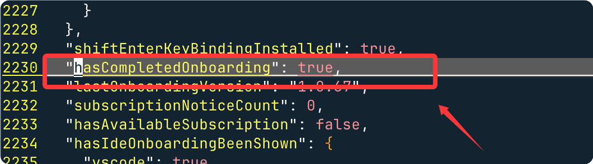
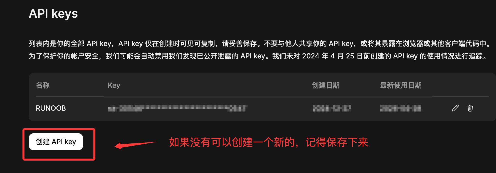
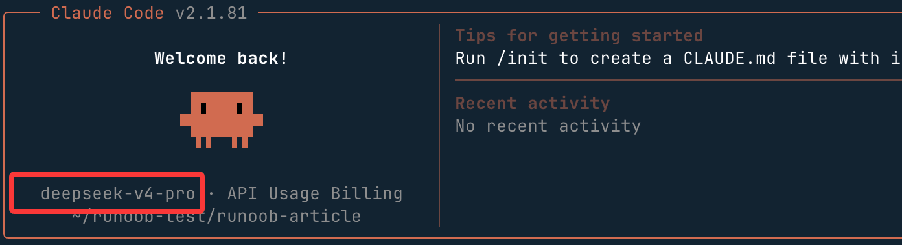

Claude Code DeepSeek 設定
Claude CodeAnthropic が提供するターミナル内で動作する AI プログラミングアシスタントで、環境変数によるサードパーティ互換 API の設定をサポートし、DeepSeek などのモデルに接続できます。
この記事では、Claude Code とDeepSeekを組み合わせて使用し、より低コストで強力な AI 支援プログラミング能力を得る方法を紹介します。
重要なポイント：
- Claude Code はANTHROPIC_BASE_URL環境変数を使用して DeepSeek 互換インターフェースを指定します。
- DeepSeek は Anthropic API と互換性のあるインターフェースを提供しており、パスは
https://api.deepseek.com/anthropic。 - 一連の環境変数により、異なるレベルのモデル（Opus / Sonnet / Haiku）をそれぞれ対応する DeepSeek モデルにマッピングできます。
- 設定が完了したら、プロジェクトディレクトリで直接
claudeコマンドを実行するだけで使用できます。
簡単に言うと：Claude Code + DeepSeek = ターミナル AI プログラミングアシスタント + コストパフォーマンスの高い大規模モデル
- Claude Code：完全なターミナル AI プログラミング対話体験を提供し、コード生成、リファクタリング、デバッグ、説明などをサポートします。
- DeepSeek API：Anthropic 互換のインターフェースを提供し、DeepSeek シリーズモデルの呼び出しをサポートします。
- 環境変数によるブリッジ：標準の環境変数を使用して両者を接続し、Claude Code のソースコードを変更する必要はありません。
前提条件
Claude Code をすでにインストールしている場合は、この手順はスキップできます。
- インストール済みNode.js18 以上。
- Windows ユーザーはさらにGit for Windows（bash 環境を提供）をインストールする必要があります。
- でDeepSeek Platformアカウントを登録し、API Key を作成済みであること。
コマンドラインで以下のコマンドを実行して、Claude Code をインストールします：
curl -fsSL https://claude.ai/install.sh | bash
インストールが完了したら、以下のコマンドを実行して確認します。バージョン番号が正常に出力されればインストール成功です：
claude --version
権限の問題が発生した場合、Linux / macOS ユーザーはコマンドの前に
sudo。ログイン検証がある場合は、ユーザーディレクトリにある.claude.json：
- macOS/Linux：~/.claude.json
- Windows：C:\Users\あなたのユーザー名\.claude.json
{ "hasCompletedOnboarding": true }
保存後、ターミナルを再起動して、再度実行します：
claudeこのとき、claude.ai へのログインのウィンドウ / プロンプトは表示されなくなります。
DeepSeek API Key を取得する
にアクセスしDeepSeek Platformログイン後、API Key を作成し、安全に保管してください。環境変数の設定時に使用します。

API Key はアカウント操作権限を持つため、コードリポジトリにコミットしたり、他人と共有したりしないでください。OS のキー管理ツールや環境変数ファイル（例：
.env）を使用して管理し、関連ファイルを.gitignore。
環境変数を設定する
Claude Code は以下の環境変数を使用して DeepSeek API に接続します。各変数の意味は次のとおりです：
| 環境変数 | 説明 |
|---|---|
ANTHROPIC_BASE_URL |
DeepSeek の Anthropic プロトコル互換インターフェースのアドレスを指定 |
ANTHROPIC_AUTH_TOKEN |
あなたの DeepSeek API Key |
ANTHROPIC_MODEL |
デフォルトで使用するモデル |
ANTHROPIC_DEFAULT_OPUS_MODEL |
Opus 層（複雑な推論タスク）にマッピングするモデル |
ANTHROPIC_DEFAULT_SONNET_MODEL |
Sonnet 層（日常的なプログラミングタスク）にマッピングするモデル |
ANTHROPIC_DEFAULT_HAIKU_MODEL |
Haiku 層（高速・軽量タスク）にマッピングするモデル |
CLAUDE_CODE_SUBAGENT_MODEL |
サブタスク Agent が使用するモデル（高速なモデルを推奨） |
CLAUDE_CODE_EFFORT_LEVEL |
思考深度、オプションlow / medium / max |
Linux / macOS
ターミナルで以下のコマンドを実行します（<你的 DeepSeek API Key>を実際の Key に置き換えてください）：
export ANTHROPIC_BASE_URL=https://api.deepseek.com/anthropic export ANTHROPIC_AUTH_TOKEN=<你的 DeepSeek API Key> export ANTHROPIC_MODEL=deepseek-v4-pro[1m] export ANTHROPIC_DEFAULT_OPUS_MODEL=deepseek-v4-pro[1m] export ANTHROPIC_DEFAULT_SONNET_MODEL=deepseek-v4-pro[1m] export ANTHROPIC_DEFAULT_HAIKU_MODEL=deepseek-v4-flash export CLAUDE_CODE_SUBAGENT_MODEL=deepseek-v4-flash export CLAUDE_CODE_EFFORT_LEVEL=max
上記の
exportコマンドは現在のターミナルセッションでのみ有効です。永続的に有効にするには、上記のコマンドを
~/.bashrc（Bash）または~/.zshrc（Zsh）ファイルの末尾に追加し、source ~/.bashrcを実行して即座に有効にします。
Windows（PowerShell）
PowerShell で以下のコマンドを実行します：
$env:ANTHROPIC_BASE_URL="https://api.deepseek.com/anthropic" $env:ANTHROPIC_AUTH_TOKEN="<你的 DeepSeek API Key>" $env:ANTHROPIC_MODEL="deepseek-v4-pro[1m]" $env:ANTHROPIC_DEFAULT_OPUS_MODEL="deepseek-v4-pro[1m]" $env:ANTHROPIC_DEFAULT_SONNET_MODEL="deepseek-v4-pro[1m]" $env:ANTHROPIC_DEFAULT_HAIKU_MODEL="deepseek-v4-flash" $env:CLAUDE_CODE_SUBAGENT_MODEL="deepseek-v4-flash" $env:CLAUDE_CODE_EFFORT_LEVEL="max"
PowerShell の
$env:代入は現在のセッションでのみ有効です。永続的に有効にするには、「システムプロパティ → 環境変数」で対応するユーザー環境変数を追加するか、上記のコマンドを PowerShell Profile ファイル（$PROFILE）。
有効かどうかを確認する
設定が完了したら、Claude Code を起動して/statusコマンドを実行して確認します：
$ cd 你的项目目录 $ claude /status
設定が正しければ、以下のような出力が表示されます：
Base URL: https://api.deepseek.com/anthropic Model: deepseek-v4-pro[1m] Small fast model: deepseek-v4-flash
これらの情報が表示されれば設定成功です。Claude Code は現在 DeepSeek V4 を使用して推論を行っています。
上記の情報が表示されない場合は、以下の項目を1つずつ確認してください：環境変数が正しく設定されているか、API Key が有効か、変数名にスペルミスがないか。
使用を開始する
プロジェクトディレクトリに移動し、claudeコマンドを実行すると Claude Code を起動できます：
cd /path/to/my-project claude
起動に成功すると、ターミナルは Claude Code の対話インターフェースになり、自然言語でプログラミング要件を直接記述できます。例：

# 让 Claude Code 解释当前项目结构 > 帮我梳理一下这个项目的目录结构和主要模块的作用 # 生成代码 > 给 user.go 新增一个根据邮箱查询用户的方法，并补充单元测试 # 调试问题 > 运行 npm test 后报错，帮我分析原因并修复
参考設定
環境変数一覧
| 環境変数 | 值 | 必須かどうか | 説明 |
|---|---|---|---|
| ANTHROPIC_BASE_URL | https://api.deepseek.com/anthropic | である | API エンドポイントアドレス。DeepSeek の Anthropic 互換インターフェースを指定 |
| ANTHROPIC_AUTH_TOKEN | sk-your-api-key | である | DeepSeek API Key。認証に使用 |
| ANTHROPIC_MODEL | deepseek-v4-pro[1m] | である | メインモデル名。[1m] は 1M コンテキストウィンドウを意味 |
| ANTHROPIC_SMALL_FAST_MODEL | deepseek-v4-flash | である | サブ Agent が使用する高速モデル |
モデル名早見表
| モデル名 | 能力 | コンテキストウィンドウ | 適用シーン |
|---|---|---|---|
| deepseek-v4-pro[1m] | 最強の推論 | 1M tokens | 複雑なアーキテクチャ設計、高度なコードレビュー、難易度の高いデバッグ |
| deepseek-v4-flash | 高速推論 | 1M tokens | バッチファイル生成、簡単な CRUD、ドキュメント作成 |
Shell 設定ファイルパス早見表
| Shell | 設定ファイルパス | 有効化コマンド |
|---|---|---|
| zsh (macOS デフォルト) | ~/.zshrc | source ~/.zshrc |
| bash (Linux デフォルト) | ~/.bashrc | source ~/.bashrc |
| PowerShell (Windows) | システム環境変数の設定 | PowerShell を再起動 |
Claude Code 設定ファイル早見表
| ファイル | パス | 役割 |
|---|---|---|
| CLAUDE.md | プロジェクトルートディレクトリ | プロジェクトレベルの規範。AI に技術スタック、コードスタイル、制約を伝える |
| .claudeignore | プロジェクトルートディレクトリ | 無視ルール。AI が指定ファイルを読み取ったり変更したりするのを防ぐ |
| settings.json | ~/.claude/settings.json | グローバル設定。MCP サーバー、権限などを含む |
モデル選択の推奨
DeepSeek モデルによってパフォーマンスとコストのトレードオフが異なります。以下は一般的なシーンでの推奨設定です：
| シーン | 推奨モデル | 説明 |
|---|---|---|
| 複雑なアーキテクチャ設計、高度なコードリファクタリング | deepseek-v4-pro[1m] |
推論能力が強く、全体を理解する必要があるタスクに適しています |
| 日常的な機能開発、コード補完 | deepseek-v4-pro[1m] |
総合性能が良く、ほとんどのプログラミングシーンをカバーします |
| クイックな Q&A、簡単な修正、サブタスク | deepseek-v4-flash |
応答速度が速く、コストが低く、高頻度の軽量タスクに適しています |
クリックしてノートを共有
ノートは本記事の内容を拡張したものである必要があります！
記事投稿は、ここをクリックしてください
登録招待コードの取得方法
ノートを共有する前にログインが必要です！
登録招待コードの取得方法